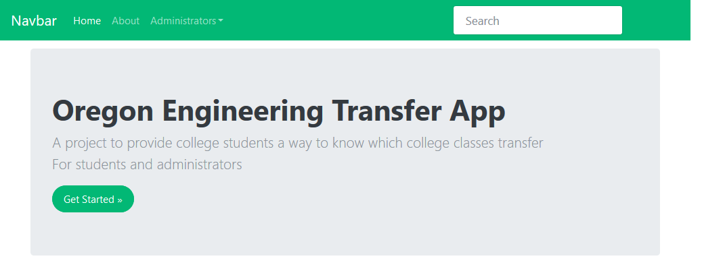

This is the 5th part of a multi-part series on building a web app with Python and Django. The web app will act as a resource for Engineering students at Oregon Community Colleges that want to transfer to 4-year Universities. It will show which classes from their community college engineering program will transfer for which classes in a 4-year University engineering program. In this part of the project, we'll add bootstrap styling to our home and about pages as well as add a navigation bar.
What is Bootstrap?
What is Bootstrap and why add it to the Django project? Bootstrap is a collection of html, javascript and css that produces mobile-responsive web pages. Bootstrap will make our website look good on phones, tablets and laptops. In this part of the project, we'll add bootstrap functionality to our Django templates and produce a navigation menu and styled home and about pages.
Add Bootstrap styling to templates
OK - Let's add bootstrap styling to our templates. We're going to use the bootstrap CDN to add bootstrap's javascript files to our webpages. I like the bootswatch materia theme, so we are going to download the bootswatch materia css and add that to the top of our base template.
Download the bootswatch materia theme
Download the bootswatch materia theme at https://bootswatch.com/ by scrolling down to materia and selecting Download → bootstrap.min.css. Download bootstrap.min.css. I renamed the file to bootswatch_materia.min.css just so I know I'm using the materia theme and not just bootstrap.
Create a new directory in the main transfer/ project directory called static/. Within the static directory, create a new directory called css/. Move bootswatch_materia.min.css into transfer/statics/css/.
Modify settings.py to point to the new static directory
We just made a new directory called static/ and inside of static/css/ we put bootswatch_materia.min.css. We need to tell Django to look in this directory for static files.
Open settings.py in the transfer_project directory and add the following lines to the bottom of the file.
# transfer_project/settings.py
...
# Static files (CSS, JavaScript, Images)
# https://docs.djangoproject.com/en/3.2/howto/static-files/
STATIC_URL = "/static/"
STATICFILES_DIRS = (Path(BASE_DIR,'static'),)
STATIC_ROOT = Path(BASE_DIR,'staticfiles')
STATICFILES_STORAGE = 'django.contrib.staticfiles.storage.StaticFilesStorage'
Run the collect static command
We specified that our static files are stored in the static/ directory. Next we need to run the collectstatic command to copy our .css file into the staticfiles/ directory. The development server will look in staticfiles/ for our .css file, and we have to make sure it gets coppied into there.
> cd Documents
> cd transfer
> conda activate transfer
(transfer) > python manage.py collectstatic
Notice that a new directory staticfiles/ was created. The output will look something like below:
129 static files copied to 'C:\Users\username\Documents\transfer\staticfiles'.
Add staticfiles/ to .gitignore
Becuase the staticfiles/ directory was created programatically, let's add it to our .gitignore file so it isn't saved in version control. Open .gitignore and add staticfiles/ at the bottom.
# .gitignore
...
staticfiles/
OK, our css file is in place. Time to modify our templates.
Modify the base.html template to use bootstrap
In the templates/ directory, modify the html file called base.html. Include the following in the template. Note in the block stylesheets section there is a link to the bootswatch materia css. Near the bottom of the page, there are links to the bootstrap javascript. The links for the bootstrap CDN may change, the links I used are here.
<!-- templates/base.html -->
{% load static %}
{% block doctype %}
<!doctype html>
<html lang="en">
{% endblock doctype %}
{% block head %}
<head>
{% block meta %}
<meta charset="utf-8">
<meta name="viewport" content="width=device-width, initial-scale=1, shrink-to-fit=no">
<meta name="description" content="">
<meta name="author" content="Peter Kazarinoff">
{% endblock meta %}
{% block favicon %}{% endblock favicon %}
<title>{% block title %}College Transfer App{% endblock title %}</title>
{% block stylesheets %}
<!-- bootswatch materia theme -->
<link rel="stylesheet" href="{% static 'css/bootswatch_materia.min.css' %}">
{% block custom_stylesheets %}
{% endblock custom_stylesheets %}
{% endblock stylesheets %}
</head>
{% endblock head %}
{% block body %}
<body>
{% block nav %}
{% include "nav.html" %}
{% endblock nav %}
{% block breadcrumb %}{% endblock breadcrumb %}
<main role="main" class="flex-shrink-0">
{% block content %}
{% endblock %}
</main><!-- /.container -->
{% block javascripts %}
<!-- bootstrap js bundle CDN -->
<script src="https://cdn.jsdelivr.net/npm/bootstrap@5.1.0/dist/js/bootstrap.bundle.min.js" integrity="sha384-U1DAWAznBHeqEIlVSCgzq+c9gqGAJn5c/t99JyeKa9xxaYpSvHU5awsuZVVFIhvj" crossorigin="anonymous"></script>
{% endblock javascripts %}
</body>
{% endblock body %}
</html>
We included a block in our base.html template for a nav bar. The nav bar section of the base template is shown below.
{% block nav %}
{% include "nav.html" %}
{% endblock nav %}
So next, we need to design a nav.html template.
Build a nav.html template
The base.html template has a section for a nav bar. The nav bar html is included in the base.html template in an {% include "nav.html" %} block. So we need to make a new nav.html template in the templates/ directory. Create a new file called nav.html in the templates/ directory and copy the code below.
<!-- templates/nav.html -->
<div class="navbar navbar-expand-lg fixed-top navbar-light bg-light">
<div class="container">
<a href="../" class="navbar-brand">Oregon Engineering Transfer</a>
<button class="navbar-toggler" type="button" data-bs-toggle="collapse" data-bs-target="#navbarResponsive" aria-controls="navbarResponsive" aria-expanded="false" aria-label="Toggle navigation">
<span class="navbar-toggler-icon"></span>
</button>
<div class="collapse navbar-collapse" id="navbarResponsive">
<ul class="navbar-nav">
<li class="nav-item dropdown">
<a class="nav-link dropdown-toggle" data-bs-toggle="dropdown" href="#" id="majors">Majors <span class="caret"></span></a>
<div class="dropdown-menu" aria-labelledby="majors">
<a class="dropdown-item" href="#">Mechanical Engineering</a>
<a class="dropdown-item" href="#">Electrical Engineering</a>
<a class="dropdown-item" href="#">Civil Engineering</a>
</div>
<li class="nav-item dropdown">
<a class="nav-link dropdown-toggle" data-bs-toggle="dropdown" href="#" id="colleges">Colleges <span class="caret"></span></a>
<div class="dropdown-menu" aria-labelledby="colleges">
<a class="dropdown-item" rel="noopener" target="_blank" href="#">Portland State University</a>
<div class="dropdown-divider"></div>
<a class="dropdown-item" href="#">Portland Community College</a>
<a class="dropdown-item" href="#">Mt. Hood Community College</a>
</div>
</li>
</li>
<li class="nav-item">
<a class="nav-link" href="{% url 'about' %}">About</a>
</li>
</ul>
<ul class="navbar-nav ms-md-auto">
<li class="nav-item">
<form class="d-flex">
<input class="form-control me-sm-2" type="text" placeholder="Search">
<button class="btn btn-secondary my-2 my-sm-0" type="submit">Search</button>
</form>
</li>
</ul>
</div>
</div>
</div>
Modify the home.html template to use bootstrap
Next, modify the home page template to use bootstrap styling. Note the base.html template is used as the parent template.
<!-- templates/home.html -->
{% extends 'base.html' %}
{% load static %}
{% block custom_stylesheets %}
<link href="{% static 'css/home.css' %}" rel="stylesheet">
{% endblock custom_stylesheets %}
{% block content %}
<div class="container">
<div class="jumbotron">
<h1>Oregon Engineering Transfer Advising Guides</h1>
<p class="lead">Below are the course transfer guides for engineering students</p>
<a class="btn btn-lg btn-success" href="#" role="button">View All Majors »</a>
</div>
<div class="container">
<!-- Example row of columns -->
<div class="row">
<div class="col-md-4">
<h2>Mechanical Engineering</h2>
<p>Mechanical engineering is an engineering branch that combines engineering physics and mathematics principles with materials science to design, analyze, manufacture, and maintain mechanical systems. </p>
<p><a class="btn btn-secondary" href="#" role="button">View details »</a></p>
</div>
<div class="col-md-4">
<h2>Civil Engineering</h2>
<p>Civil engineering is a professional engineering discipline that deals with the design, construction, and maintenance of the physical and naturally built environment, including public works such as roads, bridges, canals, dams, airports, sewerage systems, pipelines, structural components of buildings, and railways. </p>
<p><a class="btn btn-secondary" href="#" role="button">View details »</a></p>
</div>
<div class="col-md-4">
<h2>Electrical Engineering</h2>
<p>Electrical engineering is an engineering discipline concerned with the study, design and application of equipment, devices and systems which use electricity, electronics, and electromagnetism.</p>
<p><a class="btn btn-secondary" href="#" role="button">View details »</a></p>
</div>
</div>
<hr>
</div> <!-- /container -->
</div>
{% endblock content %}
Modify the about.html template to use bootstrap
Now modify the about page template to use bootstrap styling. Note again how the base.html template is again used as the parent template.
<!-- templates/about.html -->
{% extends 'base.html' %}
{% load static %}
{% block custom_stylesheets %}
<link href="{% static 'css/home.css' %}" rel="stylesheet">
{% endblock custom_stylesheets %}
{% block content %}
<div class="container">
<div class="jumbotron">
<h1>About Engineering Transfer Advising Guides</h1>
<p class="lead">These guides were constructed with Community College's transfer guide pages. Additional transfer equivalences were provided by University transfer maps, State transfer equivalencies and University transfer mapping pages.</p>
<a class="btn btn-lg btn-success" href="#" role="button">View All Majors »</a>
</div>
</div> <!-- /container -->
{% endblock content %}
All the new template and css files ends up with the following directory structure:

Run the server locally. See if the bootstrap styling works.
OK, let's run the server locally and see if all the bootstrap styling changes made a difference. Run the local server from the Anaconda Prompt using the command below.
(transfer)> python manage.py runserver


Awesome! The home and about pages look great!
Re-run the tests for two pages
In the last part of the project, we wrote a few tests in pages/tests.py for the homepage and about page. Since we modified the templates, let's run those tests again and see the result.
Run tests
Run the tests with the manage.py test command. If the local server is still running key in [Ctrl-c] to stop the server.
(transfer)> python manage.py test
The output I got after running the tests looked something like:
AssertionError: False is not true : Couldn't find '<h1>Home page</h1>' in response
----------------------------------------------------------------------
Ran 10 tests in 0.033s
FAILED (failures=2)
This means we changed the homepage template, but didn't change the tests. Go into pages/tests.py and modify the test to correspond to our new templates.
# pages/tests.py
...
def test_home_page_contains_correct_html(self):
response = self.client.get("/")
self.assertContains(response, "<h1>Oregon Engineering Transfer Advising Guides</h1>")
...
def test_home_page_contains_correct_html(self):
response = self.client.get("/about/")
self.assertContains(response, "<h1>About Engineering Transfer Advising Guides</h1>")
Let's run the tests again and see if they all pass.
(transfer) > python manage.py test
This time the output shows all the tests pass.
----------------------------------------------------------------------
Ran 10 tests in 0.029s
OK
Add, commit and push to Github
We've written a lot of code in this part of the project. The last thing to do is add our code to git, commit it and push it up to github.com.
> git add .
> git commit -m "commit message"
> git push origin main
Summary
We got a lot of work done on the transfer app built with Django and Python. We built a new base template which included the bootstrap CDN. We modified the home and about templates to use some bootstrap elements. We also built a nav template that created a nav bar for the site. Finally we modified two tests, ran the tests and pushed our code up to GitHub.
Future Work
Next, we need to build a user app into our Django project. The user app will create functionality to allow users to register and login to the site. Eventually these logged-in users will have access to modify the transfer equivalencies.